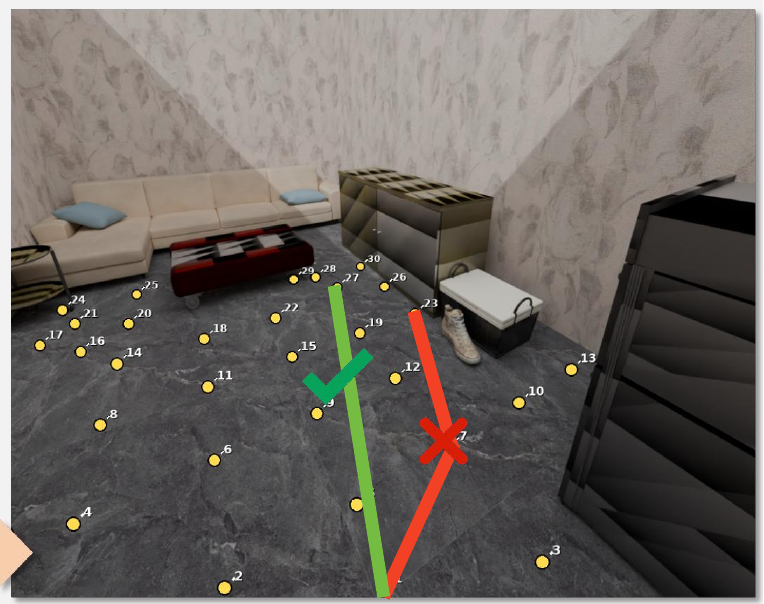
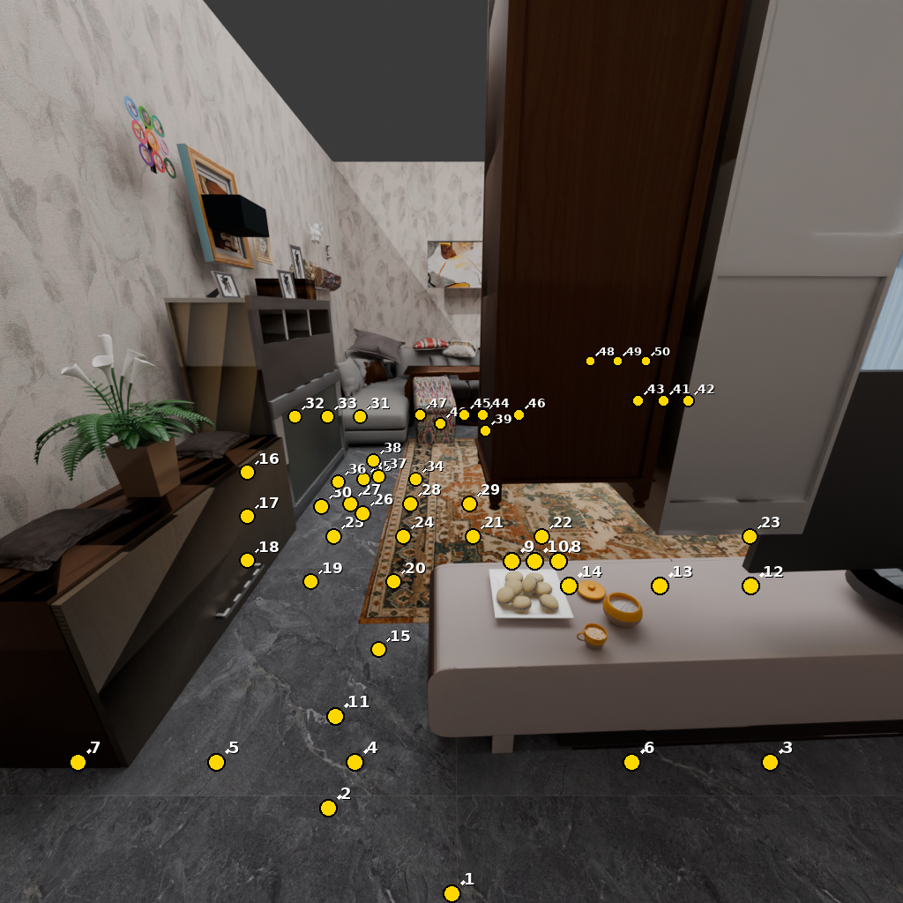
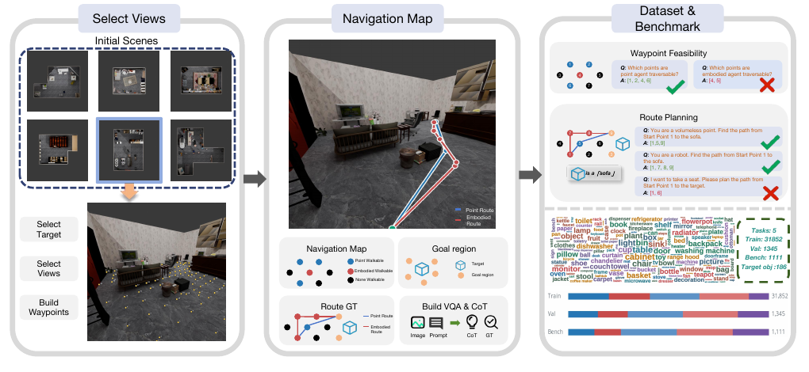

A joint decision benchmark
Five tasks connect candidate feasibility, target grounding, and complete route planning through one visual interface.
SHANGHAI JIAO TONG UNIVERSITY
EgoPathBench
Can a vision-language model turn what it sees into a complete, feasible, goal-reaching path?
Evaluating Zero-Shot Egocentric Waypoint Decision-Making in Vision-Language Models
Shanghai Jiao Tong University · *Corresponding author

“Navigate to the coffee table
next to the sofa.”
01 / WHY THIS MATTERS
A useful spatial decision brings several abilities together: recognize the goal, connect image locations to actions, account for the agent’s body, and keep the entire route feasible.
Existing spatial evaluations provide valuable measurements of objects, relations, directions, and distances. EgoPathBench examines how these abilities work together in an ordered, first-person waypoint decision.
By fixing the observation and action vocabulary, it isolates this decision from the mapping, memory, and control modules of a full navigation system.
Five tasks connect candidate feasibility, target grounding, and complete route planning through one visual interface.
Each waypoint is anchored in a 3D scene. Predictions are judged by their geometric feasibility and goal arrival.
Training questions, geometry-grounded answers, reference routes, and spatial CoT support learning as well as evaluation.
02 / WHAT WE BUILT
Explore actual questions from the released benchmark. The model sees an image and a prompt, and returns visible waypoint IDs.

ACTUAL BENCHMARK OBSERVATIONSelect every visible candidate that is traversable when the agent has no body width. This tests waypoint-to-scene correspondence and candidate feasibility.
The image shows numbered candidate points. Output a JSON array of display IDs that are walkable.
The two traversability examples share a scene and view. The Point Path and Embodied Path examples also share a scene, view, and target.
First-person RGB and visible numbered waypoints are supplied to the model.
The prediction is a candidate set or an ordered route, expressed as a JSON array.
The evaluator checks agent-specific feasibility, every selected edge, and the endpoint.
It is not the only answer a model may give. Any predicted route is evaluated against the same geometry and acceptable goal regions; path efficiency is measured after success. Scene geometry and ground-truth sidecars belong to the evaluator, not the model input.

Scenes and views → visible waypoints and targets → point/embodied feasibility graphs → verified reference routes → questions and spatial CoT. Splits are formed by source group to keep related scans or regions together. The release contains 31,852 training, 1,345 validation, and 1,111 benchmark questions.
03 / WHAT WE FOUND
Nine foundation VLMs share the same benchmark and evaluator. These are results from the paper’s fixed evaluation, not a live ranking.
BEST ZERO-SHOT SCORE
28.3/ 100Gemini 3.1 Pro leads the foundation-model comparison on EgoPath Score.
EMBODIED PATH SUCCESS
2.9%The top-ranked model reaches 35.9% on Point Path, but 2.9% on Embodied Path and 4.0% on Intent Path.
TRAINING-RESOURCE STUDY
3.9 → 38.9Qwen3.5-4B improves its EgoPath Score after fine-tuning with the released training resource.
LOOK INSIDE THE FAILURE
96.3–96.8% of outputs are evaluable routes. Yet legality often breaks later in the sequence, and selecting an acceptable endpoint remains difficult.
The central challenge is sustaining geometric and goal consistency across the entire decision.
Read the analysis · Figures 3–4 ↗Pooled over nine VLMs; each rate uses all predictions for that task. These are parallel diagnostics, not sequential pass rates. Source: paper, Fig. 3.
| Model | Point Trav. BA | Embodied Trav. BA | Point Path SR | Embodied Path SR | Intent Path SR | EgoPath Score |
|---|
BA: balanced accuracy. SR: success rate. EgoPath Score = 100 × [(2BAA1 − 1) + (2BAB1 − 1) + SRA2 + SRB2 + SRC] / 5, using task metrics in [0, 1]. Source: paper, Table 2.
Humans reach 54.2 EgoPath Score versus 28.6 for the strongest VLM on the matched human-evaluation subset. These subset scores are distinct from the full-benchmark leaderboard above.
04 / VALUE BEYOND EVALUATION
The training resource includes geometry-grounded answers and spatial CoT: reasoning supervision that connects targets, candidate feasibility, and route structure.
EgoPath Score on the full in-domain benchmark. Every metric reported in the paper’s training comparison improves.
Four reported settings across three benchmarks. Gains are percentage-point differences, with each base/SFT pair evaluated on the same items. Source: selected paper, Table 3.
05 / EXPLORE & BUILD
Task design, construction, nine-model evaluation, failure analysis, and training results.
PDF · Full research paperOPEN-SOURCE CODE ↗Inference and evaluation tools, construction scripts, training utilities, and tests.
GitHub · MIT licenseThe complete data release is being uploaded and verified. The public download will be available after integrity checks.
Release in progress · CC BY-NC-SA 4.0Dataset use remains subject to upstream asset terms. Original scene meshes are not redistributed.
Questions or collaboration? Contact Yang Zhao ↗